Comic
Dieser Comic erzählt meine ungewöhnliche Geschichte aus der Gymnasialzeit. Während dieser Zeit litt ich an Magersucht, war unglücklich und einsam, und gleichzeitig tief verliebt in meiner ersten Beziehung. Dieses Projekt war nicht nur meine Maturaarbeit, sondern auch ein Herzensprojekt, das mir half, mit meiner Krankheit abzuschließen. Der Name SWEET 16 deutet auf mein Alter hin und vorallem darauf dass in diesem Lebensabschnitt eines Teenagers das Leben alles andere als "sweet" aussehen kann.
Flyer
Mit diesem Flyer wollte ich für ein potenzielles Gelände werben, auf dem man im Sommer seine Snowboard-Tricks üben kann. Dort sollten Schneematten die scharfe Piste ersetzen. Neben dem Flyer habe ich verschiedene Designs für ein Logo entworfen. Der Name "sNOpark" steht für einen Park ohne Schnee, der dennoch ein Übungsplatz für Snowboarder ist.
| Flyer |
Logos |
| 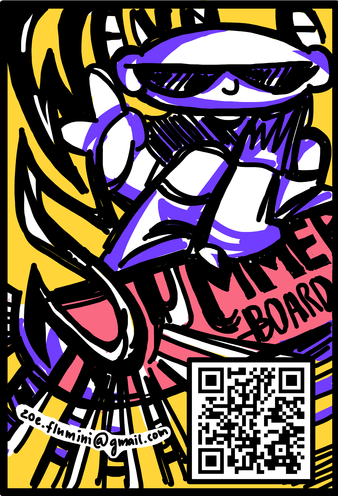
|
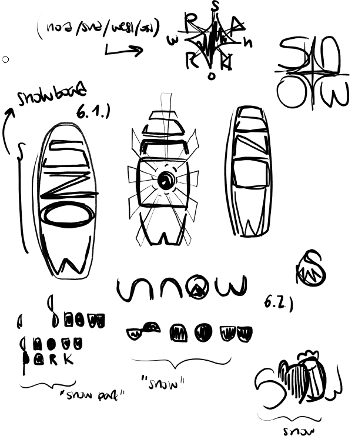 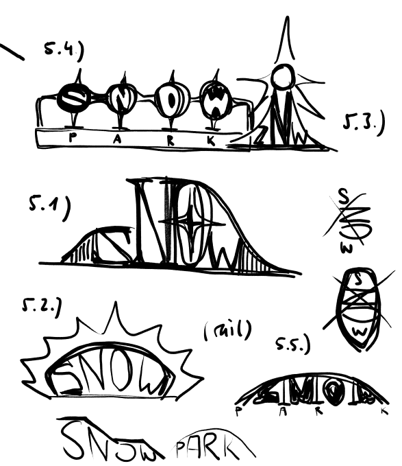 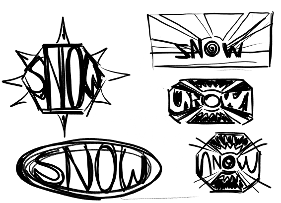 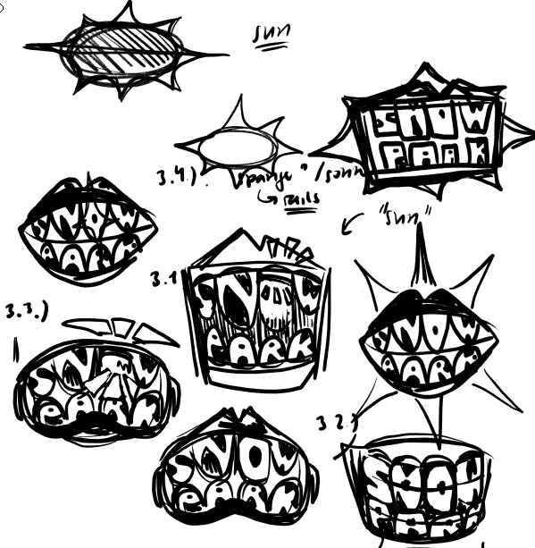 |
Doll-Repaint
Indem ich eine Monster High Puppe neu bemalte und eigene Kleidung nähte, konnte ich mein Charakterdesign zum Leben erwecken. Diese Art von Kunst mag ich sehr, da sie all meine künstlerischen Interessen vereint: Charakterdesign, Nähen, Repainting, diverse Basteleien und manchmal auch 3D-Drucke mit Blender oder ähnlichen Programmen. Außerdem liebe ich es, am Schluss Fotos zu machen und diese eventuell zu bearbeiten.
DressUp-Game
Mein Abschlussprojekt des Informatikkurses meiner Schule war ein kleines Spiel, das ich mit Python und der Pygame-Bibliothek programmiert habe. Die Illustrationen dafür habe ich ebenfalls selbst gestaltet, was mir besonders gefallen hat. In dem Spiel geht es darum, den Charakter anzuziehen, indem er mit fliegenden Kleidungsstücken kollidiert.
Character Design
Ich liebe es, meine eigenen Charaktere zu designen, Outfits zu planen und passende Frisuren und Accessoires dazu zu überlegen. Dabei lasse ich mich vor allem von der Puppenlinie Monster High inspirieren und erschaffe meine eigenen Monsterschüler, wie zum Beispiel die Tochter von Frankenstein, den Grinch oder Medusa.
| Wolf |
Grinch |
3 Könige |
Hai |
| 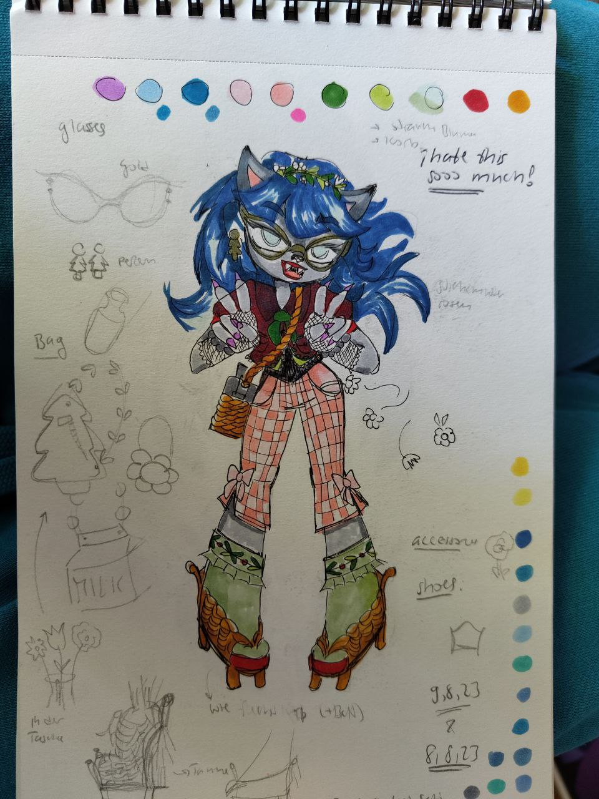 |
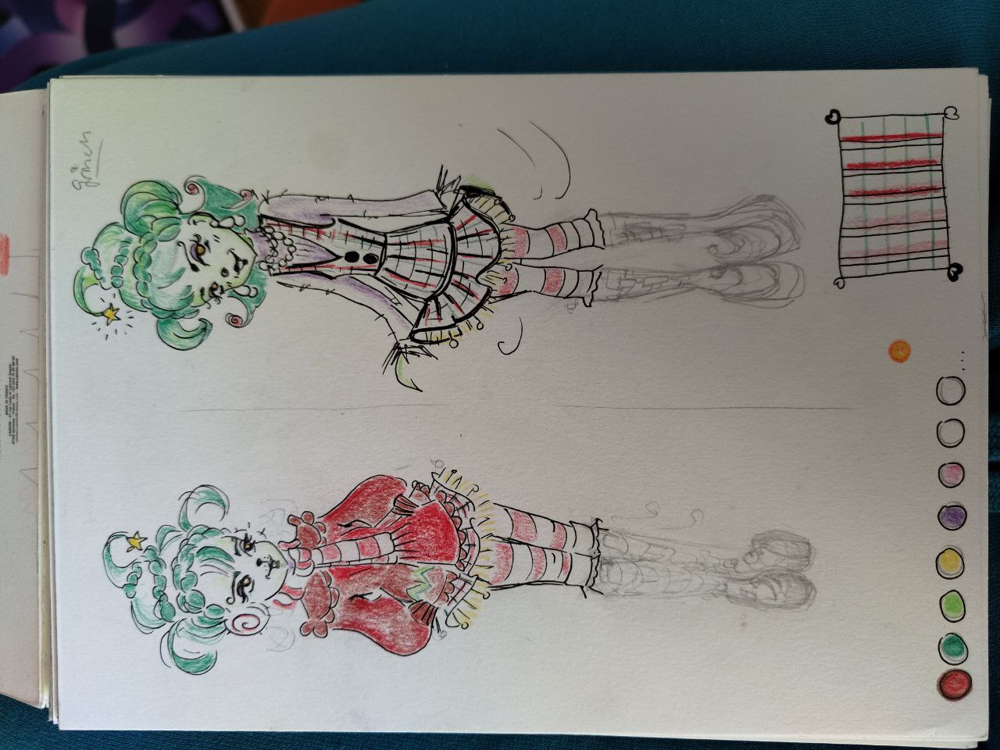 |
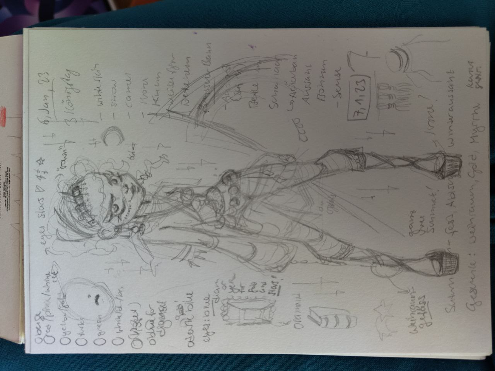 |
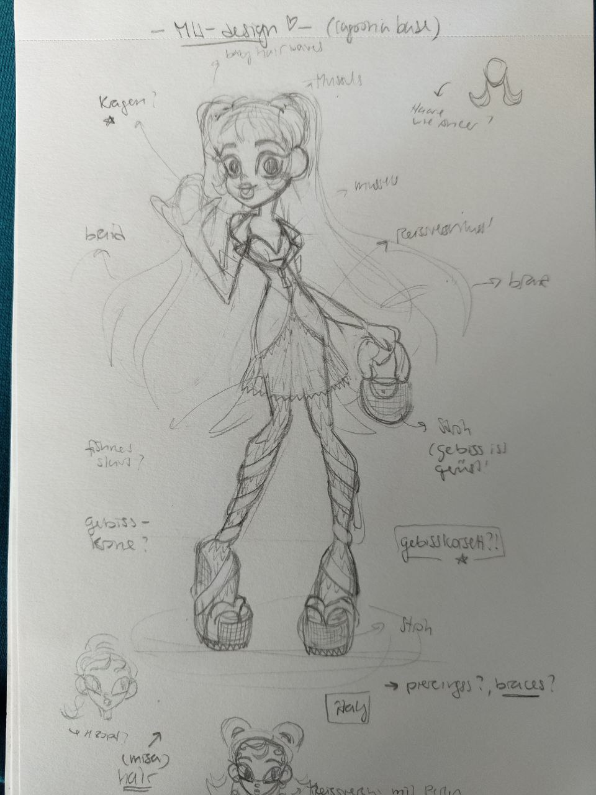 |
| Lebkuchenhexe |
Corona |
Parfum |
Halloween |
| 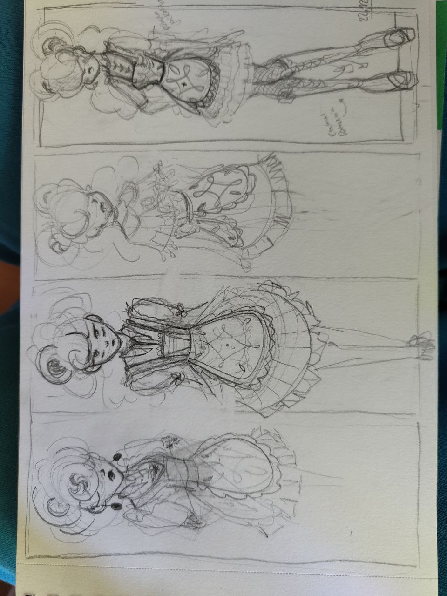 |
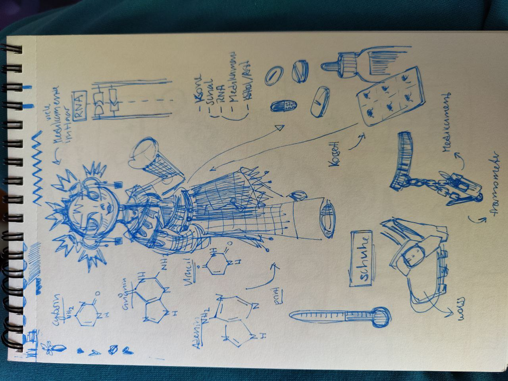 |
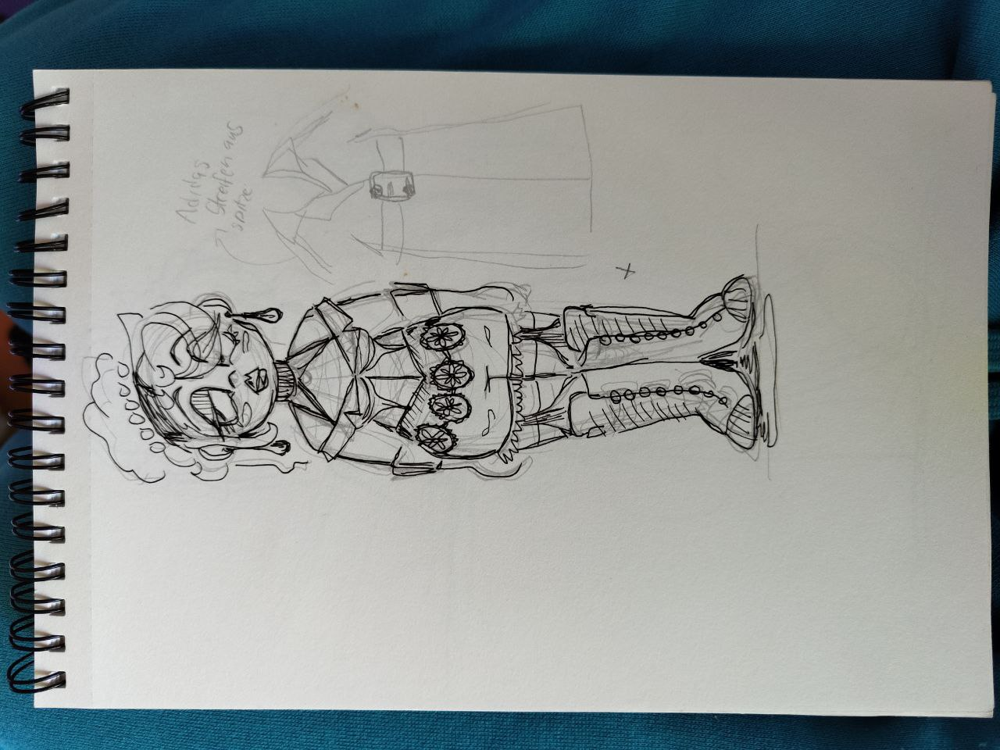 |
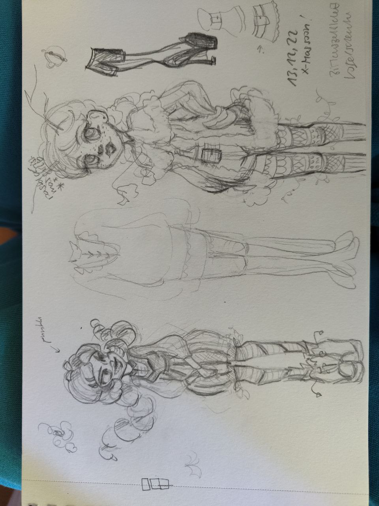 |
Nähprohekte
Mit Nähen habe nur wenig Erfahrung. Ich habe mit Puppenkleider begonnen und mich dann langsam zu Erwachsenenkleidung gesteigert. Ich bin fleissig am üben und habe noch grosses Verbesserungspotential
| Veste im japanischen Stil |
Sommerkleid mit simplem Schnitt und eingenähtem Futter |
| 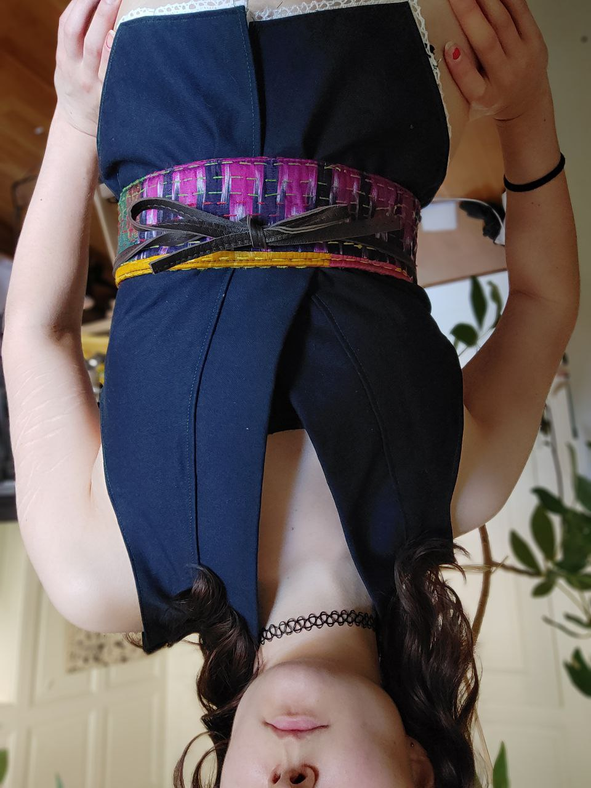 |
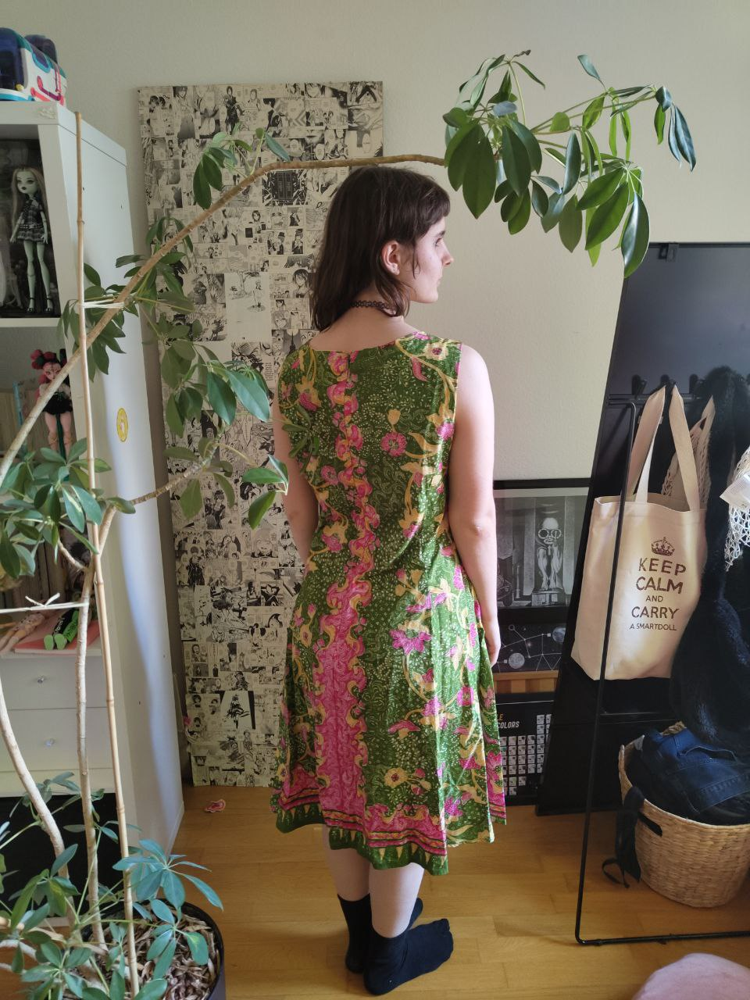 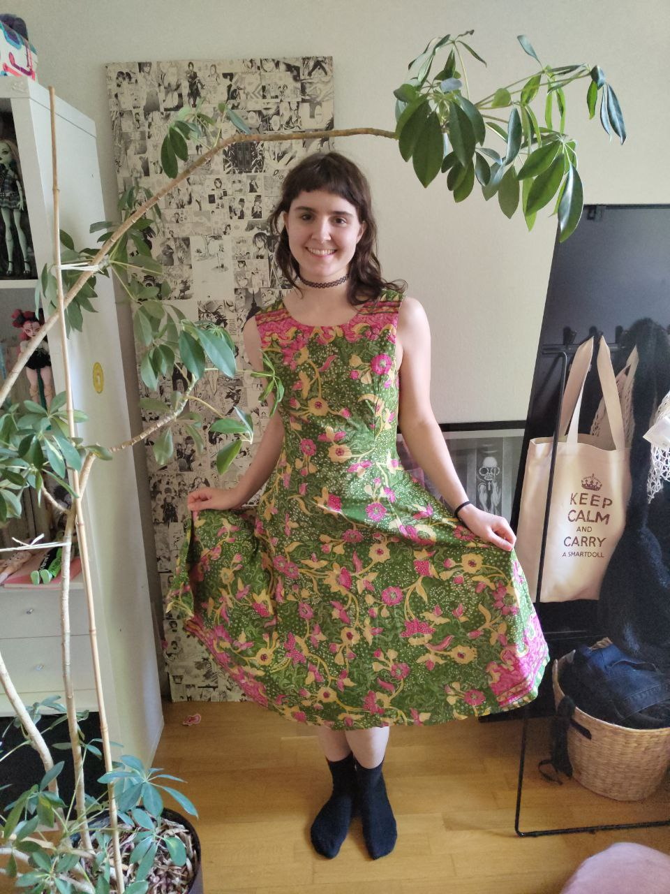 |